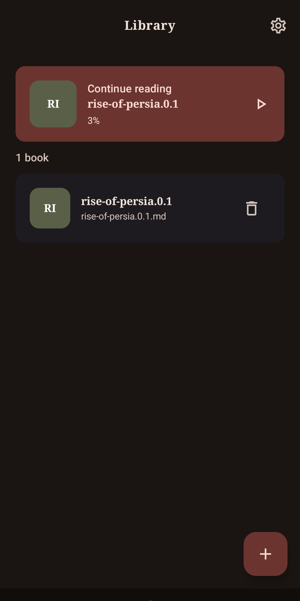
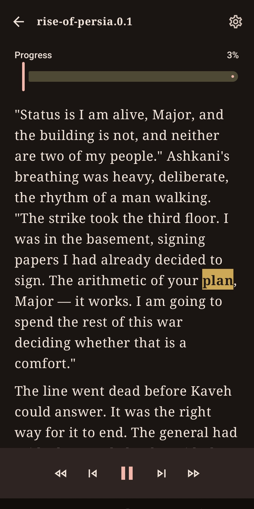
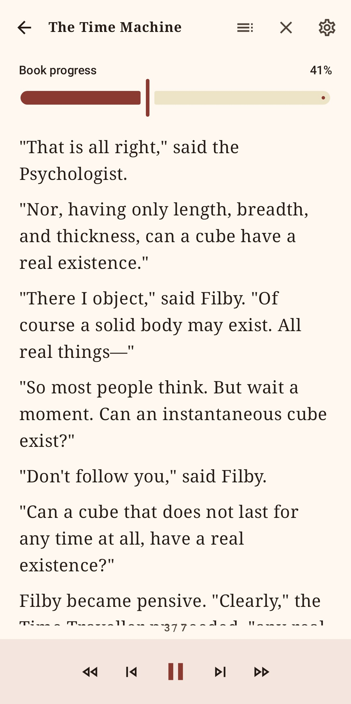

A library that stays yours
Import files with Android's document picker. Orator keeps a private copy on your device and remembers your place.
01Your library, in a voice you choose
TTS Orator turns the books and documents already on your Android device into a calm, capable reading and listening experience.
Bring your own library
Built for unhurried attention
Whether you want to read closely, listen while moving, or save a book for later, Orator keeps the experience simple and in your hands.
Import files with Android's document picker. Orator keeps a private copy on your device and remembers your place.
01Choose an installed voice, adjust speed and pitch, then control playback from the reader or your notification.
02Export a whole book as one AAC audio file. Long exports continue in the background and are saved to Music/Orator.
03Save typed notes or a private voice note at the exact place you stopped, then return whenever you need it.
04Made for real reading
Switch between comfortable themes, follow narration word by word, move through chapters, or sit down with Read Mode. TTS Orator picks up exactly where you left off.
Read the quick guide


A quick start, not a learning curve
Tap Add book, choose a TXT, Markdown, EPUB, or text-based PDF file, and let Orator add it to your private library.
Open Settings to choose a theme, text size, line spacing, an installed voice, narration speed, and pitch.
Use Read Mode for a paced visual reading experience, or play narration and jump sentence by sentence whenever you want.
Add a note at your current place, or export a completed book to an AAC file you can listen to outside the app.
Private by design
There is no Orator account or cloud library. Documents, reading progress, settings, and notes remain on your device. Core reading and narration work offline when you have an eligible installed voice.
Read the privacy policyGood to know
Yes. Reading and narration can work offline with an eligible text-to-speech voice already installed on your Android device. An internet connection is only needed for features such as the optional Google-provided ad in Book Notes.
Orator supports TXT, Markdown, EPUB, and text-based PDF files. Scanned, encrypted, and image-only PDFs are not supported.
Completed AAC (.m4a) exports are saved in the Music/Orator folder on your device. You can play, share, or remove them from the Audio exports screen.
Email segoo.inc@gmail.com and include your Android version, Orator version, and a short description of the issue.
Start where you are